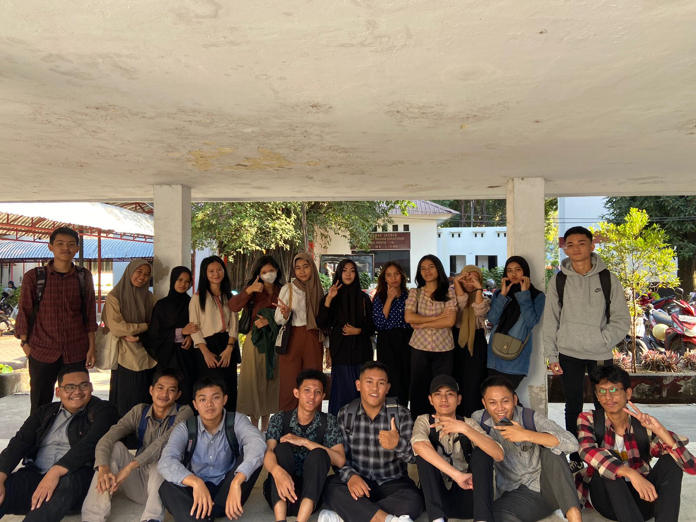
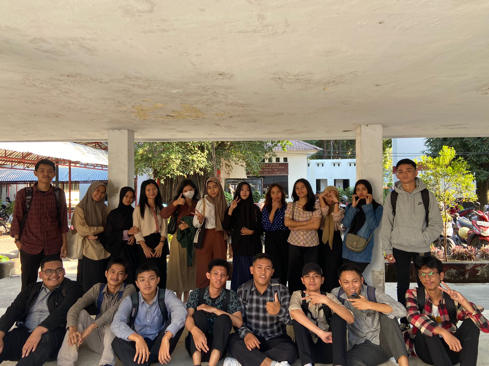

Nama : Nur Azisa Ibrahim
NIM : 230209502091
Kelas : PTIK H
Alamat : Manding, BTN VILLA TAMARA jln. Bukit Raya Blok. C No. 33 Polewali Mandar
Alamat : Manuruki 2, jln. Mamoa 4 lorong 2B No. 16 Kota Makassar
Sekolah Asal : SMA NEGERI 1 POLEWALI
UNIVERSITAS NEGERI MAKASSAR
KALAU ORANG LAIN BISA YA ALHAMDULILLAH, KENAPA HARUS SAYA
Awal masuk perkuliahan di semester 3 kita tidak langsung belajar secara tatap muka di karenakan pada saat itu masih ada MABA yang melakukan PKKMB jadi pada minggu pertama itu kita belajar secara daring. Awal pwerkuliahan ada beberapa dosen yang tidak masuk karena ikut serta dalam PKKMB MABA untuk menjadi pemateri. Minggu kedua kita sudah mulai mengerjakan tugas yang cukup banyak. Dan di minggu kedua perkuliahan ini ada mata kuliah yang dilakukan secara luring di kampus. Setelah melakukan kuliah luring, malamnya kita dapat kabar bahwa gedung JTIK ada yang rubuh dan akhirnya kita kuliah daring lagi. ini khususnya mata kuliah yang kelasnya ada di JTIK. Ada kelas kita juga yang dilakukan di gedung elektro dan Phinisi.
Selama itu ada kita mengerjakan tugas yang diberikan dosen. Dan saya selaku sekretaris kelas membantu ketua saya untuk membawa basen ketika kuliah berlangsung secara luring. Atau membantu bendahara kelas saya untuk mencatat nama nama yang membayar uang kas. Ada waktu saya juga membantu teman kelas saya untuk mengerjakan tugasnya. Sebagai sekretaris kelas ada banyak yang saya bawa ketika ada perkuliahan yang dilakukan secara luring. Jika kuliah di lakukan secara daring saya hanya perlu screenshot ketika meet lalu meng list nama nama yang hadir. Kadang saya di bantu teman kelas saya untu meng screenshot. Semua itu sangat menyenangkan.
 

| NO | NAMA | JENIS KELAMIN | ALAMAT | ASAL SEKOLAH | |
|---|---|---|---|---|---|
| Lengkap | Panggilan | ||||